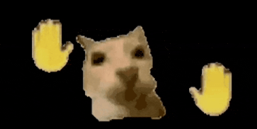
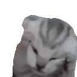
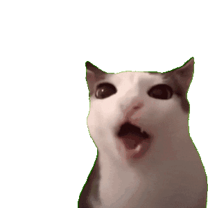

La invitación
En lo que estaba debatiéndome si ir o no ir, me puse a buscar algo que hacer y creé un plan de aprendizaje de un tema que me interesó un poco — Al final, no hice nada—. Estaba tan aburrida que me fui a dormir. PeEeErO, de la nada, me llega una invitación de cumple — no le hice mucho caso, me dormí—. Luego, cuando desperté y comí, fui a pedir permiso al líder supremo de mi morada, mi mamá. Después de sopesar los pros y los contras, me dijeron que podía ir, así que regresé triunfante a mi habitación y se lo conté a mi almohada — Volví a dormir—.

El regalo
Un regalo...
¿DONDE IBA A CONSEGUIR UN REGALO EN DOS DÍAS?! — Tampoco era que tenía dinero—.
—Dejémoslo todo en mano de Dios y de mi mamá.
Olvidandome rápidamente de mi regalo, luego de haberselo encargado a mi mamá, me propuse buscar a alguien para no ir sola —me da cosita llegar a los lugares sola —, luego de disociar un rato, contacté a una persona que vive en La Cuaba; comunidad de Pedro Brand; Municipio de Santo Domingo; capital de República Dominicana; isla y país de Centro américa; división de América; continente americano; hemisferio occidental; planeta Tierra; sistema solar; galaxia Vía Láctea; universo conocido; espacio interestelar; cúmulo local de galaxias;
supercúmulo Laniakea; cosmos observable; existencia multidimensional; realidad; percepción; conciencia; plano físico; plano energético; plano temporal; infinitud; absoluto; totalidad; multiverso; dimensiones paralelas; tiempo eterno; energía primordial; esencia cósmica; unidad universal; vacío creativo; potencial infinito;cuyo nombre no mencionaré por derechos de autor y demandas.
—ME DIJO QUE TAMBIÉN IRÍA, ASÍ QUE, CELEBRÉ SOLA.

Misión secundaria
Acordé ir con ella a por su regalo al día siguiente, cosa que no se pudo porque, qué sé yo…
Al otro día…
La verdad no recuerdo qué hice el miércoles, entonces saltamos al jueves.
El jueves en la tarde acompañé al humano de compras, como misión secundaria, o sea, a conseguir el regalo, a unas horas del cumple. Luego de emprender un viaje de grandes dificultades bajo la torrencial lluvia, llegamos a nuestro destino: la tienda de Doña Funn — todo caro, pero como no era mi dinero, pues meeh—. Después de una breve extorsión a mi desdichada compañera de misión, continuamos nuestro camino para completarla.
Y al fin llegamos a nuestro destino final: otra tienda, pero no era cualquier tienda, era la tienda de Doña Fior. A ver qué otras cosas conseguíamos para la bolsa de regalo, que estaba un poco vacía —la mía también —. Pues encontramos dulces, muchos dulces — y baratos… una ganga—, los compramos y comenzó a llover. Así que simplemente nos sentamos a dar nuestra sincera opinión sobre los juguetes que se encontraban en exhibición para ser vendidos — antes eran reales—. Había una Barbie con un Max Steel porque Kenn no tiene el pelo negro, y un Minene (bebé) con cara perturbadora.
En ese tiempo que estuvimos hablando cosas productivas, la lluvia fue parando poco a poco. Nos despedimos y emprendimos el camino de vuelta a nuestras humildes moradas. Al llegar a una encrucijada, yo me fui por la izquierda —o fue la derecha?—, donde tuve que dar un mortal porque había lodo —todo está en mi cabeza, así que si fue un mortal, lo fue—, y mi fiel escudero se fue por la derecha —o era la izquierda—, no sin antes despedirnos con un tomorrow.
